Lequan YuPhD
Rm 1024, Ho Sin-Hang Engineering Building |
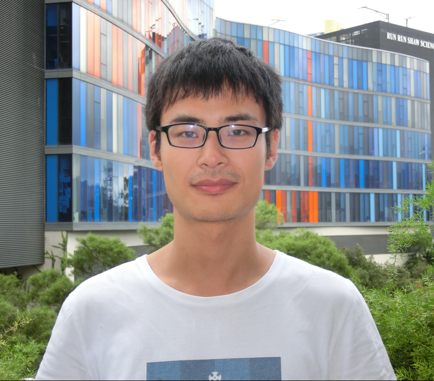 |


Biography [CV]
I am currently a final year (2018-2019) Ph.D. student in the Department of Computer Science and Engineering, The Chinese University of Hong Kong, supervised by Prof. Pheng-Ann Heng and Prof. Chi-Wing Fu. Previously, I received the B. Eng degree from Department of Computer Science and Technology in Zhejiang University in 2015, under the supervision of Prof. Deng Cai.
My research interests include Deep Learning for Medical Image Analysis and 3D Vision. I am dedicated to bring modern deep learning methods to biomedical image analysis. I also have expertise in deep learning for 3D shape analysis. Recently, I am focusing on medical image segmentation with limited data and annotation as well as unsupervised deep learning for point cloud analysis.
News
- [09/2018] Our team (CUHKMED) won the first place on the optic disc/cup segmentation challenge at REFUGE .
- [07/2018] I started my internship in NVIDIA's deep learning for medical imaging research group, Bethesda, USA.
- [07/2018] The paper on segmentation from Prenatal Volumetric Ultrasound has been accepted by TMI.
- [07/2018] The paper on edge-aware point set consolidation network has been accepted by ECCV 2018.
- [07/2018] The paper on semi-supervised skin lesion segmentation has been accepted by BMVC 2018.
- [02/2018] The paper on point cloud upsampling has been accepted by CVPR 2018, see the code of PU-Net.
- [09/2017] The paper on 3D deeply supervised networks for volumetric segmentation won the MedIA-MICCAI'17 Best Paper Award.
- [05/2017] Two papers (one Oral) were accepted to MICCAI 2017.
- [03/2017] I started my internship in Siemens Healthcare, Medical Imaging Technologies, Princeton, USA.
- [10/2016] Our team won the first place in the MICCAI 2016 Whole-Heart and Great Vessel Segmentation Challenge.
Publications
| 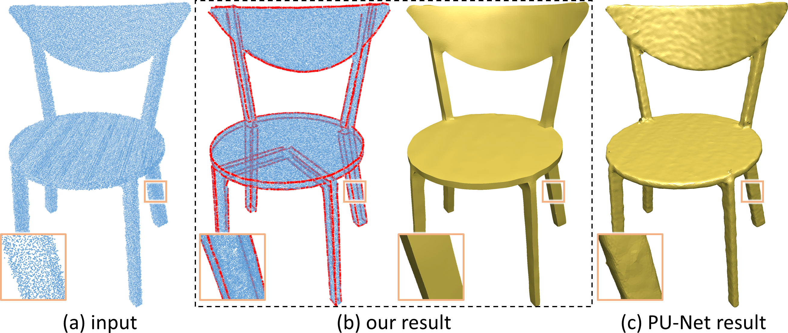 | Lequan Yu*, Xianzhi Li*, Chi-Wing Fu, Daniel Cohen-Or, Pheng-Ann Heng. "EC-Net: an Edge-aware Point set Consolidation Network" European Conference on Computer Vision (ECCV), 2018. |
| 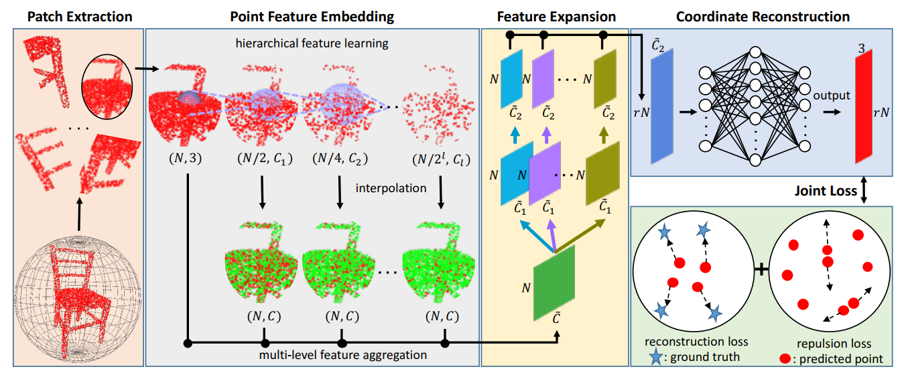 | Lequan Yu*, Xianzhi Li*, Chi-Wing Fu, Daniel Cohen-Or, Pheng-Ann Heng. "PU-Net: Point Cloud Upsampling Network" IEEE Conference on Computer Vision and Pattern Recognition (CVPR), 2018. |
| 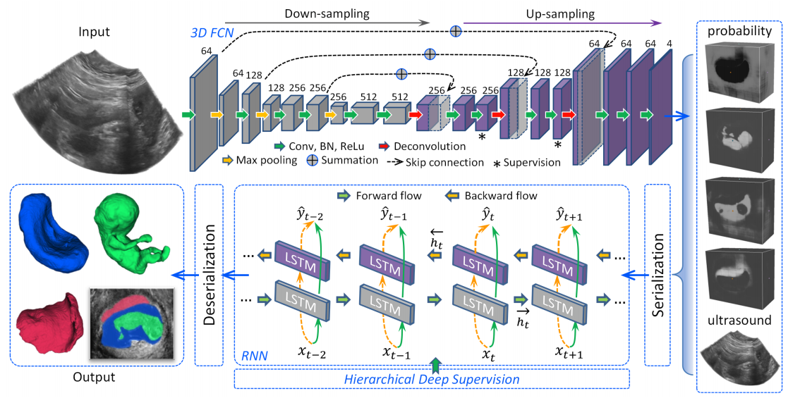 | Xin Yang, Lequan Yu, Shengli Li, Huaxuan Wen, Dandan Luo, Cheng Bian, Jing Qin, Dong Ni, Pheng-Ann Heng. "Towards Automated Semantic Segmentation in Prenatal Volumetric Ultrasound" IEEE Transactions on Medical Imaging (TMI), 2018. |

|
Xiaomeng Li, Lequan Yu, Hao Chen, Qi Dou, Chi-Wing Fu, Pheng-Ann Heng. "Semi-supervised Skin Lesion Segmentation via Transformation Consistent Self-ensembling Model" British Machine Vision Conference (BMVC), 2018.
[paper] |

|
Lequan Yu, Jie-Zhi Cheng, Qi Dou, Xin Yang, Hao Chen, Jing Qin, Pheng-Ann Heng. "Automatic 3D Cardiovascular MR Segmentation with Densely-Connected Volumetric ConvNets" Medical Image Computing and Computer Assisted Intervention (MICCAI), 2017. |
| 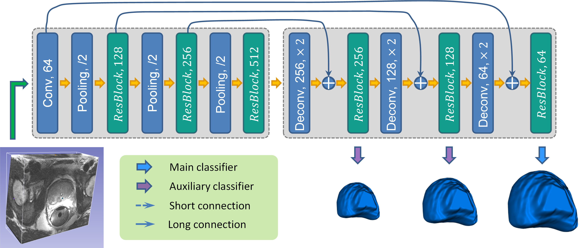 | Lequan Yu, Xin Yang, Hao Chen, Jing Qin, Pheng-Ann Heng. "Volumetric ConvNets with Mixed Residual Connections for Automated Prostate Segmentation from 3D MR Images" Thirty-First AAAI Conference on Artificial Intelligence (AAAI), 2017. (Oral Presentation) |
| 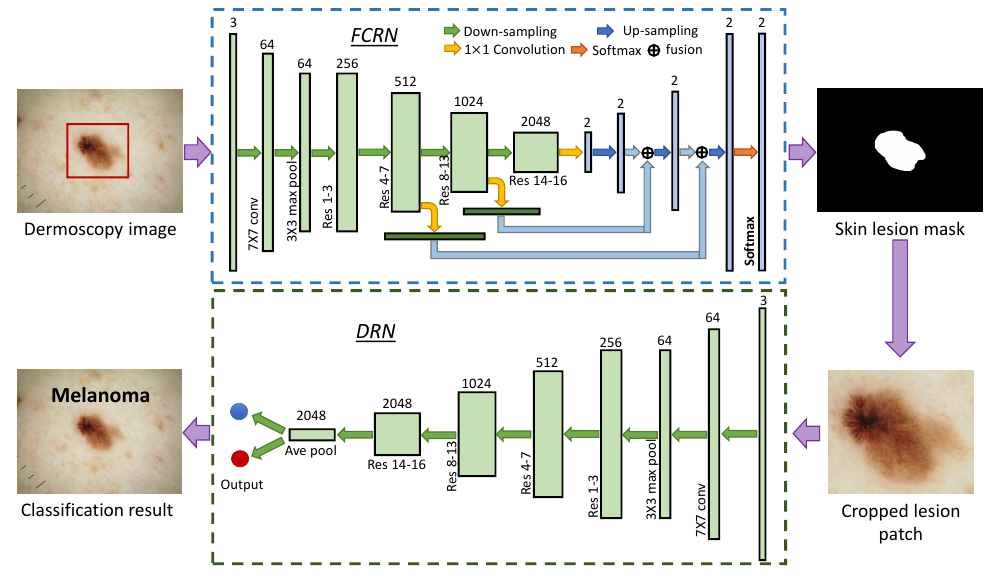 | Lequan Yu, Hao Chen, Qi Dou, Jing Qin, Pheng-Ann Heng. "Automated Melanoma Recognition in Dermoscopy Images via Very Deep Residual Networks" IEEE Transactions on Medical Imaging (TMI), 2017.
[paper] [project] [code] [challenge website] |
| 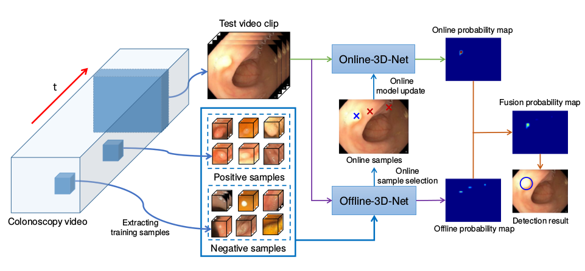 | Lequan Yu*, Hao Chen*, Qi Dou, Jing Qin, Pheng-Ann Heng. "Integrating Online and Offline 3D Deep Learning for Automated Polyp Detection in Colonoscopy Videos" IEEE Journal of Biomedical and Health Informatics (JBHI), 2017.
[paper] |
| 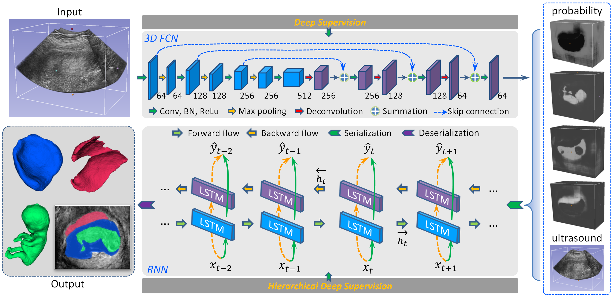 | Xin Yang, Lequan Yu, Shengli Li, Xu Wang, Na Wang, Jing Qin, Dong Ni, Pheng-Ann Heng. "Towards Automatic Semantic Segmentation in Volumetric Ultrasound" Medical Image Computing and Computer Assisted Intervention (MICCAI), 2017. (Oral Presentation) |
| 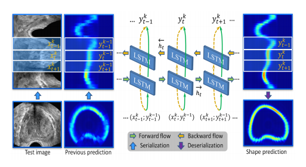 | Xin Yang, Lequan Yu, Lingyun Wu, Yi Wang, Dong Ni, Jing Qin, Pheng-Ann Heng. "Fine-grained Recurrent Neural Networks for Automatic Prostate Segmentation in Ultrasound Images" Thirty-First AAAI Conference on Artificial Intelligence (AAAI), 2017. (Oral Presentation)
[paper] |

|
Qi Dou, Lequan Yu, Hao Chen, Yueming Jin, Xin Yang, Jing Qin, Pheng-Ann Heng. "3D Deeply Supervised Network for Automated Segmentation of Volumetric Medical Images" Medical Image Analysis (MedIA), 2017. (MedIA-MICCAI'17 Best Paper Award) |
| 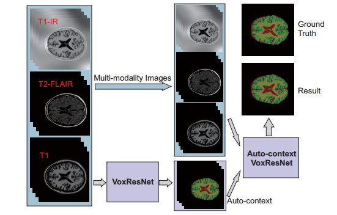 | Hao Chen, Qi Dou, Lequan Yu, Jing Qin, Pheng-Ann Heng. "VoxResNet: Deep Voxelwise Residual Networks for Volumetric Brain Segmentation" NeuroImage, 2017. |

|
Yueming Jin*, Qi Dou*, Hao Chen, Lequan Yu, Jing Qin, Chi-Wing Fu, Pheng-Ann Heng. "SV-RCNet: Workflow Recognition from Surgical Videos using Recurrent Convolutional Network" IEEE Transactions on Medical Imaging (TMI), 2017.
[paper] |
| 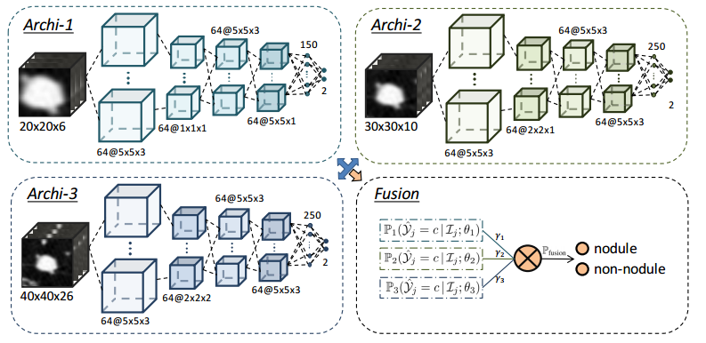 | Qi Dou, Hao Chen, Lequan Yu, Jing Qin, Pheng-Ann Heng. "Multi-level Contextual 3D CNNs for False Positive Reduction in Pulmonary Nodule Detection" IEEE Transactions on Biomedical Engineering (TBME), 2016.
[paper] |
|
|
Qi Dou, Hao Chen, Yueming Jin, Lequan Yu, Jing Qin, Pheng-Ann Heng. "3D Deeply Supervised Network for Automatic Liver Segmentation from CT Volumes" Medical Image Computing and Computer Assisted Intervention (MICCAI), 2016. |
| 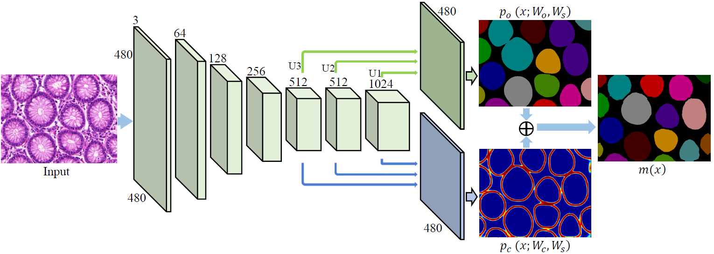 | Hao Chen, Xiaojuan Qi, Lequan Yu, Pheng-Ann Heng, "DCAN: Deep Contour-Aware Networks for Accurate Gland Segmentation" IEEE Conference on Computer Vision and Pattern Recognition (CVPR), 2016. |
| 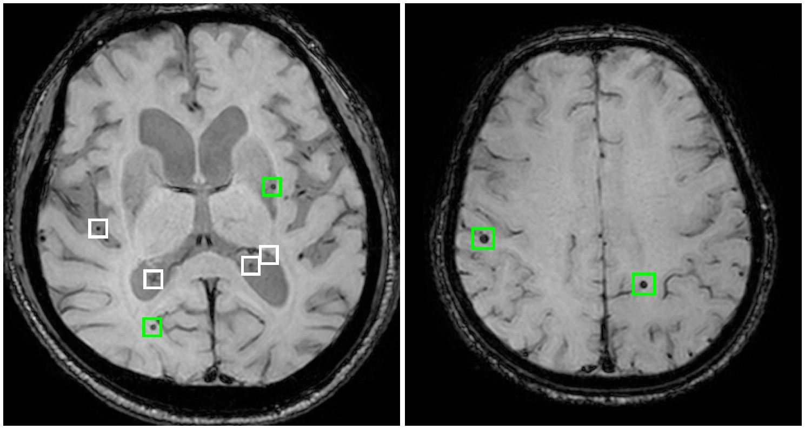 | Qi Dou*, Hao Chen*, Lequan Yu, Jing Qin, Lin Shi, Pheng-Ann Heng, et al. "Automatic Detection of Cerebral Microbleeds from MR Images via 3D Convolutional Neural Networks" IEEE Transactions on Medical Imaging (TMI), 2016. |
| 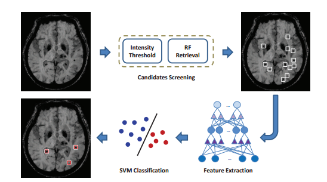 | Qi Dou, Hao Chen, Lequan Yu, Lin Shi, Defeng Wang, Vincent CT Mok, Pheng-Ann Heng. "Automatic Cerebral Microbleeds Detection from MR Images via Independent Subspace Analysis Based Hierarchical Features" Annual International Conference of the IEEE Engineering in Medicine and Biology Society (EMBC), 2015. (Oral Presentation)
[paper] |
| 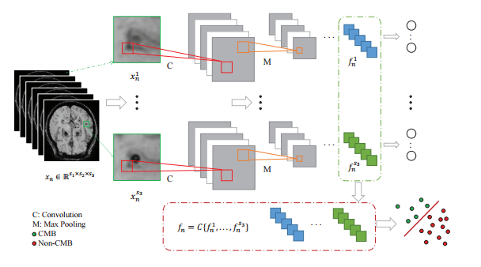 | Hao Chen*, Lequan Yu*, Qi Dou, Lin Shi, Vincent CT Mok, Pheng-Ann Heng, "Automatic Detection of Cerebral Microbleeds via Deep Learning Based 3D Feature Representation" IEEE International Symposium on Biomedical Imaging (ISBI), 2015. (Oral Presentation)
[paper] |
Honors & Awards
| AAAI Scholarship, San Fransisco, USA, 2017 |
| National Scholarship in China, 2012-2014 |
| He Zhijun Scholarship (1/300+, Highest Honor in College of Computer Science, Zhejiang University), 2014 |
| Kwanjeong Educational Foundation Scholarship, 2012-2014 |
| Meritorious Winner, Interdisciplinary Contest in Modeling (ICM), Consortium for Mathematics and Its Application, 2014 |
| The Outstanding Undergraduate Award (Awarded by CCF, 100 undergraduates every year in China), 2014 |
| Outstanding Graduates of Zhejiang University, 2015 |
Professional Activities
MICCAI2018
ISBI2018
IEEE Transactions on Medical Imaging (TMI)
IEEE Transactions on Image Processing (TIP)
Medical Image Analysis (MedIA)
Neurocomputing
IEEE Transactions on Biomedical Engineering (TBME)
Journal of Biomedical and Health Informatics (JBHI)
International Journal of Computer Assisted Radiology and Surgery (IJCARS)
Computer Methods and Programs in Biomedicine (CMPB)
Informatics in Medicine Unlocked
Journal of Electronic Imaging (JEI)
Teaching
| 2015-2016 | Fall | CSCI1130 Introduction to Computing Using Java |
| 2015-2016 | Spring | CSCI3180 Principles of Programming Languages |
| 2016-2017 | Fall | ENGG5108 Big Data Analytics |
| 2016-2017 | Spring | CSCI3150 Introduction to Operating Systems |
| 2017-2018 | Fall | CSCI3150 Introduction to Operating Systems |
| 2017-2018 | Spring | CSCI3150 Introduction to Operating Systems |

© Lequan Yu | Last updated: 03/07/2018